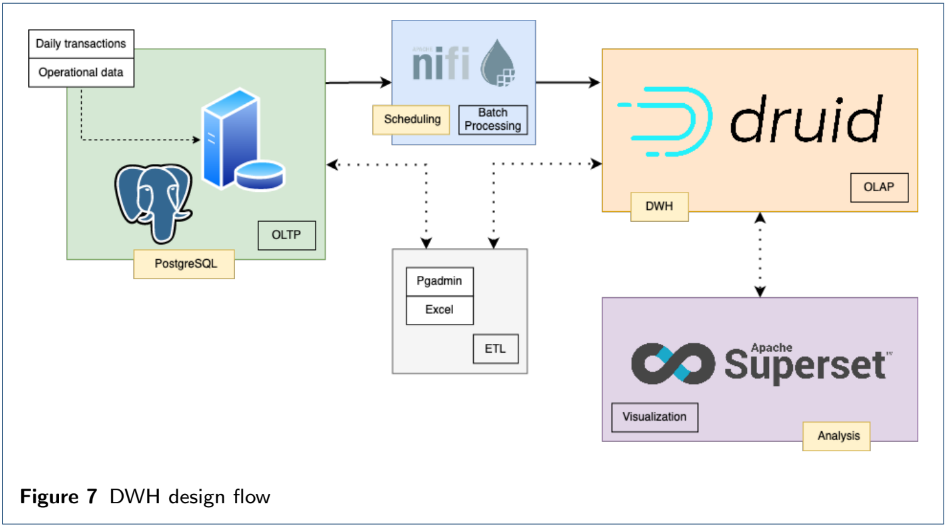
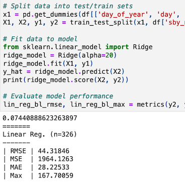
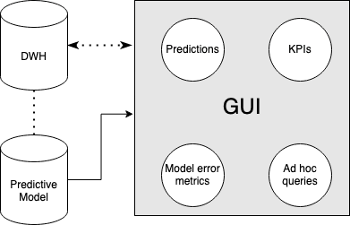

My Portfolio
Wizard of cognitive-inspired tech solutions.
Scholar of Social and Data Sciences.
Crusader of music, cooking, and snowsports.
As a business professional, I bring to the table a unique blend of expertise that seamlessly fuses technical acumen with exceptional interpersonal skills. I firmly believe that the essence of professionalism lies in the harmonious marriage of creativity and effective communication. With a solid foundation in technical domains, I navigate the intricate world of data, analytics, and technology with ease. My capacity to harness data-driven insights and wield technological tools is paralleled only by my unwavering commitment to the art of human connection. I recognize that genuine collaboration and open lines of communication are cornerstones of professional success. In every endeavor, I prioritize innovation and the ability to communicate complex concepts in a manner that resonates with both technical and non-technical stakeholders. This fusion of skills allows me to bridge the gap between the digital and human realms, driving forward-thinking solutions and fostering an environment where creativity thrives.
Offerings
Some things I can do exceptionally well especially if I'm being paid for them.
Projects
Business Intelligence: Sylt Fish Specialties
Case study
Completed as the final exam for the Business Analyst (I) module for graduate studies at IU. The task was to design and implement a data model for a company with a specific use case. Creation of a Data Warehouse, ETL processing, and a live data dashboard implemented within the scope of the use case for BI analysis.
Executive Summary
Our sample analyses show that a blossoming company like Sylt Fish Specialties can scale profits using clever analysis of daily business. Being able to monitor company metrics in an efficient and cost-effective manner such as this is the most advantageous way to increase profits. When the company wants to know which hour to offer a discount on Black Cod, they can rely on the developed dashboard to understand the trends as they are happening; when the concern is about supplier performance for seafood logistics, it is also important to have quick dashboard access to understand the data. Apache Druid and Superset were used here in tandem to reflect the accessibility and power of the designs; but there are many options available that are up to the discretion of the client and what they are comfortable investing in. The recommendation to use open-source technology as a reporting system for company data is strong due to the vast open- source development support given to Apache products. The versatility of using custom Python scripts to develop reports and design dashboards in a framework written completely in Python (Superset) adds a gained advantage to the designed system because Python knowledge is common in the education path of data analysts.
Solution
The idea that OLAP (Online Analytical Processing) is an extremely advantageous system to use for business intelligence is at the heart of our design decision for this business case. Apache Druid as an OLAP database and DWH is currently in use by profitable companies such as eBay, Netflix, AirBnB, and Nielsen; companies that require high-level batch and real-time processing of data.
Forecasting Model of Rescue Drivers Using MS-TDSP
Case study
Submitted for the Model Engineering module for graduate studies at IU. The task was to develop a prediction model that optimized the number of rescue drivers being held on standby for the Berlin Red Cross. A baseline model was developed, then a precise prediction model using a few different ML algorithms was proposed in the case study, and the benefits and implementation were discussed further in the discussion section of the paper.
Executive Summary
The Berlin Red Cross rescue service (BRC) answers to emergency calls when people are in need. On any given day, there are a set amount of rescue drivers residing on standby to answer these calls. When rescue drivers are not able to work due to temporary illnesses, the estimated number of drivers needed in a day can be interchangeable. The BRC allots a flat total of 90 standby-drivers every day; however, the HR planning department struggles with this approach since seasonal weather patterns affect employee health and allocating a flat number of standby- drivers often leads to having not enough or too many drivers standing by. Our firm took up the task of fixing this organizational puzzle. We used our expertise in predictive modeling to develop a solution for the BRC that leverages machine learning (ML) techniques and data science. The solution developed can hereby be utilized by the organization to monitor, refine, and predict their approach to help redistribute budget towards cost efficient business goals.
Challenge
The task is to develop a solution that allows the planning department to assign standby drivers more accurately. Accuracy, in this case, means that there is minimal amount of extra standby drivers assigned that do not get used, while there is a maximized number of days where additional standby drivers do not need to be assigned. In developing this solution, there are many variables that need to be considered. The challenge herein lies in the business’ ability to understand which features of the dataset will help to predict an optimal number of standby drivers in need, which features can properly account for an accurate prediction, and the total volume, value, and variety of the organization’s data.
Solution
Our solution takes the necessary steps to clean and preprocess the accumulation of data in BRC’s data warehouses (DWH) before using it to train ML models that make predictions. As a result of the developments, the company was able to create a solution that not only predicts the optimal quantity of standby drivers needed on a given day, but also improved the coefficient of determination (R2) score from the initial baseline models’ 7.4% to over 99%, while lowering the root mean squared error (RMSE) rates from 33.73 to under 0.01 (that's quite significant).
Business Intelligence: Portfolio
Portfolio
Completed as the final exam for the Business Analyst (II) module for graduate studies at IU. The task was to conceptualize and present a Data Mining strategy for a company to use against their CRM, to identify options and alternatives, while highlighting a recommended solution to the business' use case.
Concept
Bring, an online grocery delivery platform that provides ultra-fast delivery of varied products to customers’ doorstep. The business model is centered around a mobile app that allows users to make orders, track deliveries, and subscribe to repetitive shipments of groceries. The advantage of this platform is speed, allowing users to receive deliveries in as little as 10 minutes. Fast deliveries are enabled by strategically placed warehouses and AI technology to guarantee freshness and quality.
CRM Optimization
In the grocery delivery service sector, customer satisfaction begins with a positive experience from using the platform; customer satisfaction should be maintained throughout the delivery process and kept even after products have been delivered. In order to focus our CRM strategy on customer retention, it is important to identify the type of customers that are using this platform in order to create a customized experience for them. To have knowledge of which user profile is more likely to keep paying for subscriptions to our service, we should divide users into separate groups for analysis. Finally, to ensure loyalty of our brand, we need to collect the right data in our CRM process and use data mining to transform that data into knowledge about our customers. Data mining technology can optimize our CRM systems by focusing on the following core questions: How do we know which customers will churn?, How do we guarantee satisfaction in initial and subsequent uses of the platform?, and How do we keep customers loyal to our brand?
Business Intelligence Portfolio
Case study
 Fringilla nisl. Donec accumsan interdum nisi, quis tincidunt felis sagittis eget. tempus euismod. Vestibulum ante ipsum primis in faucibus vestibulum. Blandit adipiscing eu felis iaculis volutpat ac adipiscing accumsan eu faucibus. Integer ac pellentesque praesent tincidunt felis sagittis eget. tempus euismod. Vestibulum ante ipsum primis in faucibus vestibulum. Blandit adipiscing eu felis iaculis volutpat ac adipiscing accumsan eu faucibus. Integer ac pellentesque praesent. Donec accumsan interdum nisi, quis tincidunt felis sagittis eget. tempus euismod. Vestibulum ante ipsum primis in faucibus vestibulum. Blandit adipiscing eu felis iaculis volutpat ac adipiscing accumsan eu faucibus. Integer ac pellentesque praesent tincidunt felis sagittis eget. tempus euismod. Vestibulum ante ipsum primis in faucibus vestibulum. Blandit adipiscing eu felis iaculis volutpat ac adipiscing accumsan eu faucibus. Integer ac pellentesque praesent.
Fringilla nisl. Donec accumsan interdum nisi, quis tincidunt felis sagittis eget. tempus euismod. Vestibulum ante ipsum primis in faucibus vestibulum. Blandit adipiscing eu felis iaculis volutpat ac adipiscing accumsan eu faucibus. Integer ac pellentesque praesent tincidunt felis sagittis eget. tempus euismod. Vestibulum ante ipsum primis in faucibus vestibulum. Blandit adipiscing eu felis iaculis volutpat ac adipiscing accumsan eu faucibus. Integer ac pellentesque praesent. Donec accumsan interdum nisi, quis tincidunt felis sagittis eget. tempus euismod. Vestibulum ante ipsum primis in faucibus vestibulum. Blandit adipiscing eu felis iaculis volutpat ac adipiscing accumsan eu faucibus. Integer ac pellentesque praesent tincidunt felis sagittis eget. tempus euismod. Vestibulum ante ipsum primis in faucibus vestibulum. Blandit adipiscing eu felis iaculis volutpat ac adipiscing accumsan eu faucibus. Integer ac pellentesque praesent.
Research
Opportunities for Cognitive Modeling in Software Project Management: The Value of Applying Cognitive Science to Conceptual Models
Master's thesis
To highlight and formalize the interconnected relationships between cognitive modeling (CM), software project management (SPM), and behavioral and cognitive science. The study builds on the existing research efforts of SPM modeling by extracting an interdisciplinary cognitive approach and applying it to preexisting conceptual models. Methods: Systematic Literature Review (SLR), text mining, clustering. Key findings: CM techniques have the capacity to reproduce a wide scope of cognitive processes, many of which are useful to take into consideration in the modeling and simulation of human-computer interactive behavior. While there exists separated bodies of research within each of the study domains, there is an incongruity amongst the modeling community between the semantic distinctions of cognitive and computational modeling. Conclusion: There is a strong relationship between CM, SPM, HCI, and cognitive science that is under-represented in current cognitive science and PM research. The implementation of cognitive theories into models that replicate SPM processes is a key area of future cognitive and behavioral science studies. Keywords: cognitive modeling, software project management, behavioral science, cognitive science, human-computer interaction
Reliability and Validity of Self-Reported Stress Measures
Literature review
The report provides a literary overview on how the reliability and validity of self-report style questionnaires and surveys are effected by the topic of stress. Often being in connection with negative physiological and psychological symptoms, stress has been shown to have adverse effects on cognitive performance and functioning that can reduce the validity and reliability of self-reported survey answers. Traits of Emotional Intelligence (EI) and high interpersonal functioning are identified as precursors to faking behavior and exaggerating one’s mental health, both of which also have negative effects on self-report scores.
Open Access to Big Energy Data Using Data Lakes
Research article
The scope of this report will begin with a high-level overview of DL and their imbedded layers and technologies, and how enterprises can design DL to attend to modern problems. Along with exploring the best architectural paradigms needed to follow suitable data security and operability measures, it will compare the use of DL with other Big Data infrastructures and examine the lifecycle of data stored in DL, along with the challenges involved at each step. The report will then cover renewable Big Energy and Big Climate data, respectively, from the perspective of using DL and Open Data portals to both proliferate public and private stakeholder knowledge in sustainable areas and drive innovation. Finally, further research in using DL and related technologies will be presented to promote open access to data for the renewable energy sector.
Artificial Neural Networks in Renewable Energy: Forecasting, Prediction, and Optimization
Research article
Artificial neural networks have received a vast amount of research in the past two decades, much of which has observed the use of how intelligent technology is used in the renewable energy sector as a tool for predicting, optimizing, and forecasting energy storage and utilization. Within the scope of this article will be an exploration into how neural networks are used to develop renewable energy for sustainability and advancement of society. A specific focus will be placed into how the use of AI prediction models in society has an overwhelming effect on economic and social prosperity, and how attention has shifted towards the regulation of these technologies to promote the globally defined near-future shift towards green energy practices.
Minimizing Least-Square Residual Error of Linear Models in Python
Research article
This paper outlines the structure and format of a Python program designed to map a dataset of various functions to their best-fitting ideal function based on a least squares method of regression analysis. The source code to the program is discussed in terms of approach taken and theory behind the decision-making process. Functions in each dataset are visualized using Python’s Matplotlib, Pandas, and NumPy libraries, and presented in this paper to provide further explanation of the thought process in the design of the program.